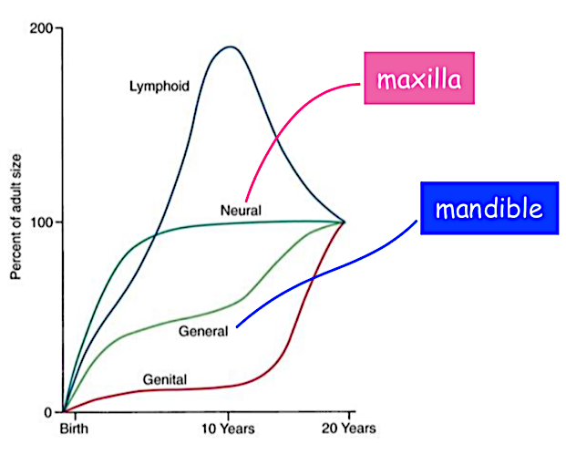
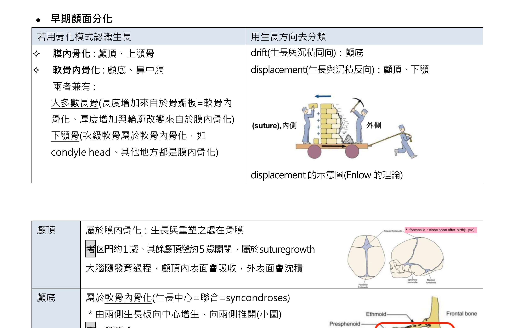
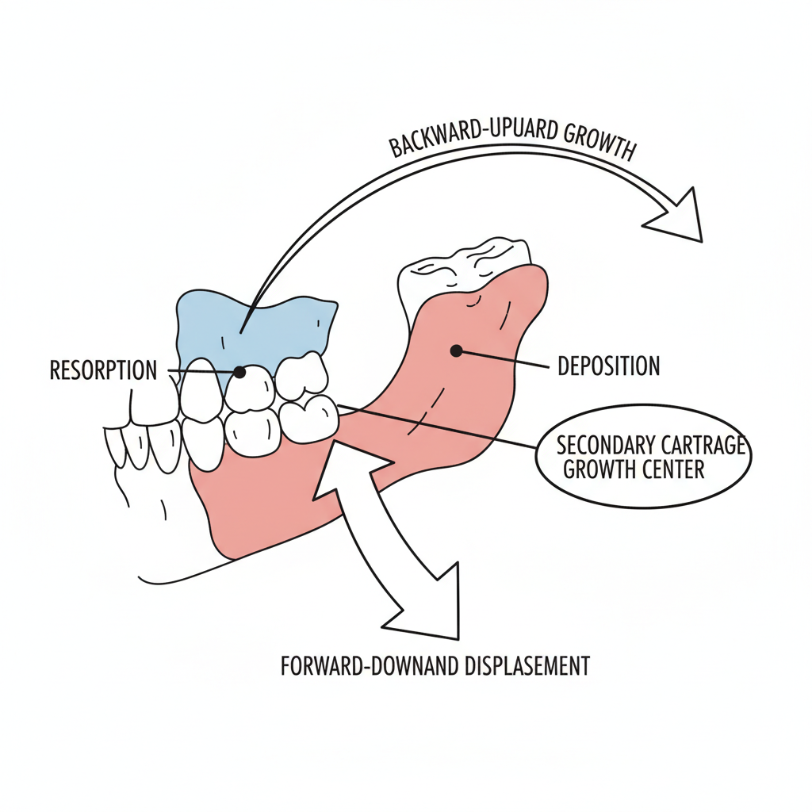
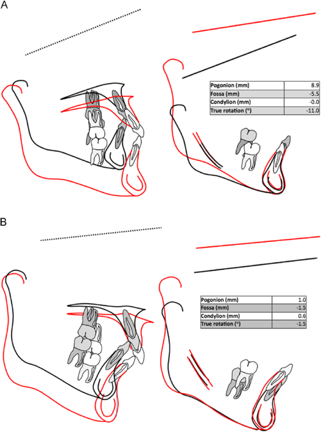
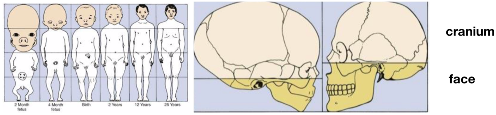

你
林醫師，小安現在 15 歲，她還在生長嗎？矯正治療的時機跟生長有關係嗎？
師
關係非常大！矯正很多時候是在「借力使力」，利用病人還在長的時候來導引顎骨生長。先來搞清楚生長（growth）和發育（development）的差別。
生長 vs 發育 + Scammon 曲線
Growth（生長）= 大小的增加（量的改變），可以測量
Development（發育）= 成熟度的改變（質的改變），功能的進步
Maturation（成熟）= 達到成人狀態的過程
師
Scammon 在 1930 年發表了著名的生長曲線，把身體各系統的生長模式分成四種。國考超愛考。
| 系統 | 曲線型態 | 關鍵時間點 | 例子 |
|---|
| Neural（神經型） | 早期快速上升 | 6-7 歲達成人的 ~90%，12 歲 ~100% | 腦部、眼睛、頭顱 |
| Lymphoid（淋巴型） | 先升後降（倒 U 型） | 10-12 歲達 200% 高峰，然後退縮到 100% | 扁桃腺、腺樣體、淋巴結 |
| General（一般型） | S 型曲線 | 嬰幼期快 → 兒童期慢 → 青春期第二波加速 | 骨骼、肌肉、內臟、身高 |
| Genital（生殖型） | 青春期才起飛 | 青春期前幾乎不長，12-18 歲急速上升 | 性腺、性器官 |

Scammon 四大生長曲線：Neural（最早達100%）、Lymphoid（倒U型超過100%）、General（S型）、Genital（最晚起飛）
陷阱題
「淋巴型組織在什麼年齡達到最大？」→
10-12 歲，而且會超過成人值（達 200%）！之後才退縮。
「腦部在幾歲達到成人大小的 90%？」→
6-7 歲（Neural 型）。這就是為什麼頭圍在嬰幼兒期就接近成人。
骨化模式

膜內骨化（上顎、顱頂）vs 軟骨內骨化（下顎髁突、蝶枕聯合），各部位骨化方式一覽
師
顎骨的生長方式有兩種：膜內骨化（intramembranous）和軟骨內骨化（endochondral）。哪裡用哪種，考試一定要會。
| 骨化模式 | 機制 | 位置 |
|---|
Intramembranous
（膜內骨化） | 間葉組織直接變成骨頭，不經過軟骨階段 | 上顎、顱蓋骨（calvaria）、下顎骨體部、鎖骨 |
Endochondral
（軟骨內骨化） | 先形成軟骨模型 → 軟骨被骨頭取代 | 顱底（cranial base）、下顎髁突（condyle）、長骨 |
顱底縫合（Synchondroses）
| 縫合 | 全名 | 閉合時間 |
|---|
| SES | Spheno-ethmoidal synchondrosis | 6-7 歲 |
| ISS | Intersphenoid synchondrosis | 出生前已閉合 |
| SOS | Spheno-occipital synchondrosis | 生長期結束才閉合（~13-16 歲女；15-17 歲男） |
SOS 最晚閉合的記憶法
SOS = Save Our Ship = 最後才離開船（最晚閉合）
SOS 是國考最常考的 synchondrosis，因為它是最晚閉合的，也是顱底最後的生長中心。SOS 閉合後，顱底長度就固定了。
上下顎生長

下顎生長：髁突向後上方生長，下顎整體向前下方位移；上顎靠縫合生長向前下方移動

下顎旋轉：Forward rotation（短臉傾向）vs Backward rotation（長臉傾向），影響臉型與咬合
師
完全不一樣！上顎主要靠膜內骨化 + 縫合生長，下顎主要靠髁突的軟骨內骨化。
上顎（Maxilla）生長
| 方向 | 機制 | 時間 |
|---|
| 寬度 | Midpalatal suture 膜內骨化 | ~10 歲左右完成大部分 |
| 前後長度 | 後方骨沈積（tuberosity apposition） | ~10 歲完成大部分 |
| 垂直高度 | 前方 = bone apposition；後方 = 鼻底下降 + alveolar 生長 | 持續到青春期後 |
上顎整體是向前向下生長（forward and downward），但生長的方式其實是後方和上方做 apposition（骨沉積），前方和下方做 resorption（骨吸收），等於「翻譯」到前下方。
下顎（Mandible）生長
| 結構 | 機制 |
|---|
| Condyle（髁突） | 軟骨內骨化 → 向後上方生長 → 下顎整體位移到前下方 |
| Ramus | 前方吸收（resorption）+ 後方沈積（apposition）→ ramus 後退、body 變長 |
| Chin | 幾乎不生長（remodeling only） |
比喻時間
下顎 ramus 的生長就像「倒退走路」：前面的骨頭被挖掉（吸收），後面長出新骨頭（沈積）。結果 ramus 整體「往後退」，但下顎 body 的空間就變長了。
下顎旋轉與臉型
| 旋轉方向 | 臉型結果 | 特徵 |
|---|
| 前旋轉 (Forward rotation) | 短臉型 / deep bite | 下顎平面角減小、chin 變突出、brachycephalic |
| 後旋轉 (Backward rotation) | 長臉型 / open bite | 下顎平面角增大、chin 後縮、dolichocephalic |
顎骨生長完成時間

生長完成順序：寬度最先停 → 長度其次 → 高度最晚；女生約 14-16 歲、男生約 16-18 歲趨緩
師
女生大約 14-16 歲生長趨緩，但不代表完全停止。記住這個順序：寬度最先停、長度其次、高度最晚。
臉部發育的順序：cranium 先 → midface 次 → mandible 最後
生長高峰期（PHV, Peak Height Velocity）：女生約 11-12 歲，男生約 13-14 歲
骨齡評估：hand-wrist X-ray（Greulich-Pyle / TW3）或頸椎成熟度指標（CVMI / CVM）
生長發育考試重點
考試重點框
- Scammon 曲線：Neural 6-7 歲 90%、Lymphoid 10-12 歲達 200% peak、General = S 型、Genital 青春期才起飛
- 膜內骨化：上顎、顱蓋骨、下顎骨體部；軟骨內骨化：顱底、下顎髁突
- SOS 最晚閉合（生長期結束才閉合）；SES 6-7 歲；ISS 出生前
- 上顎生長向前向下，靠縫合 + tuberosity apposition；下顎靠 condyle 軟骨內骨化
- Ramus：前吸後沈 → body 變長
- 前旋轉 → 短臉 / deep bite；後旋轉 → 長臉 / open bite
- 顎骨生長完成順序：寬 > 長 > 高
- 臉部發育：cranium → midface → mandible
- PHV：女 11-12 歲，男 13-14 歲